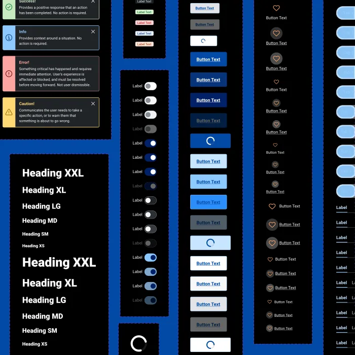
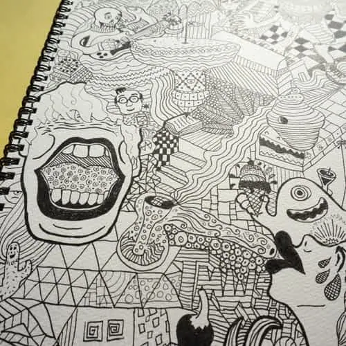
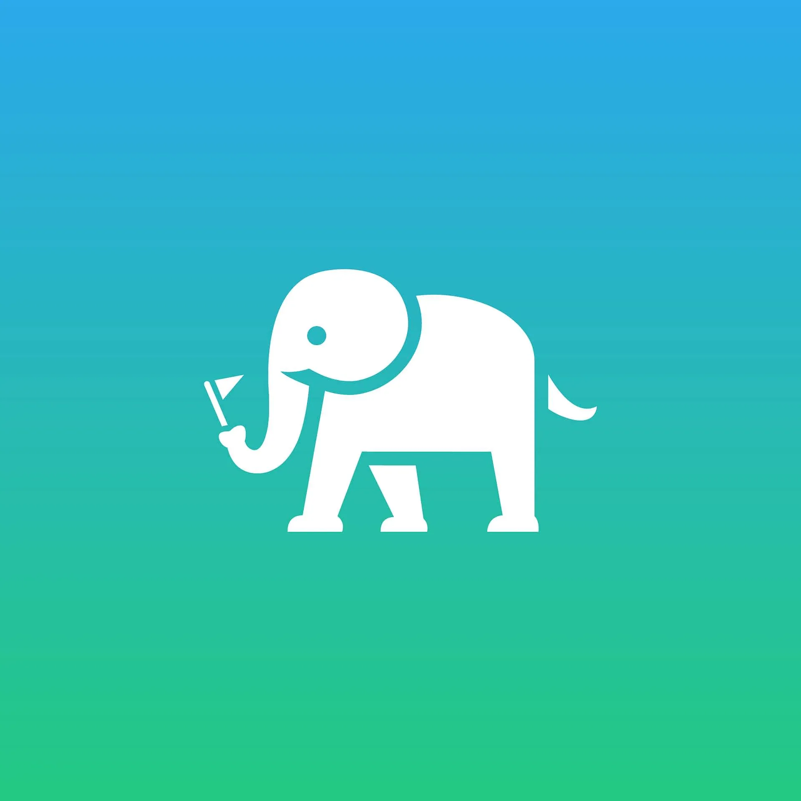
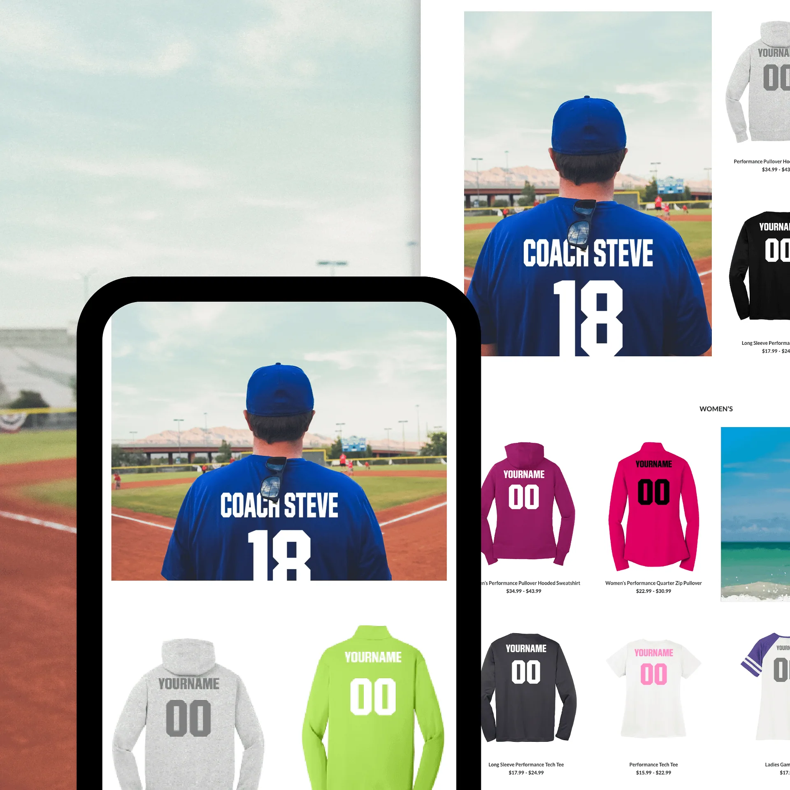
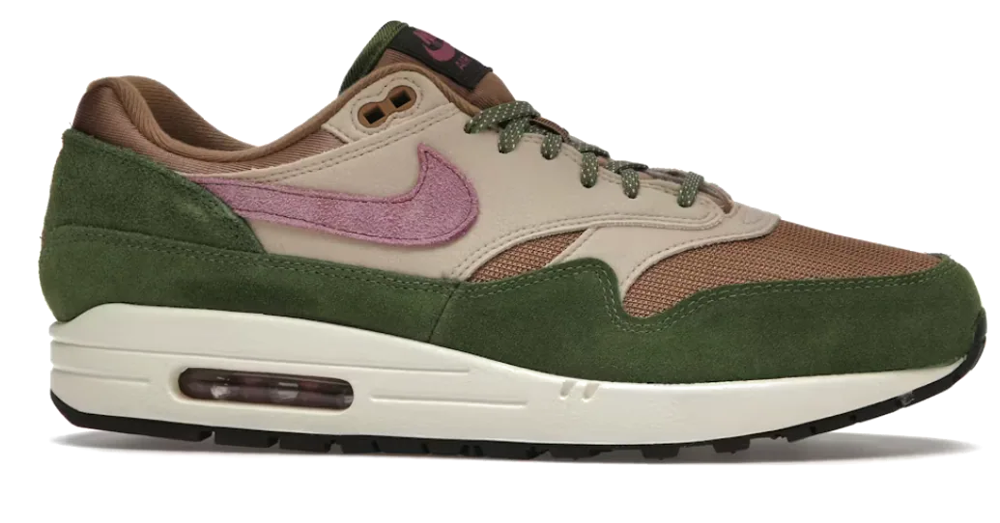
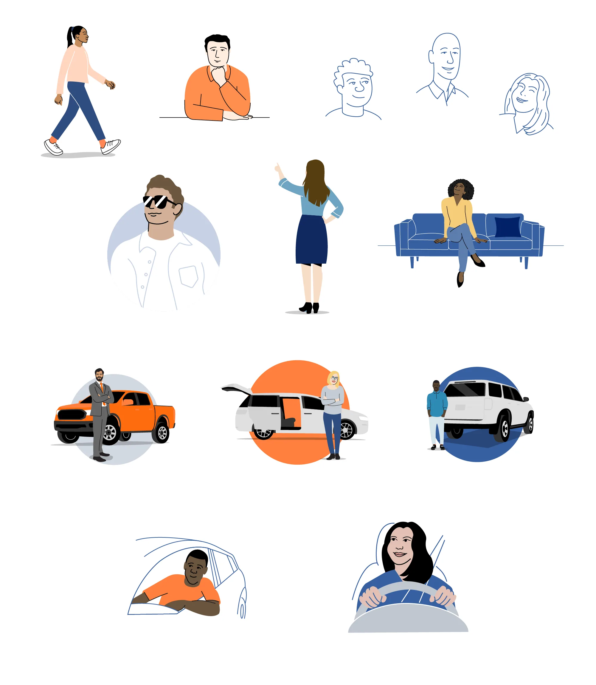
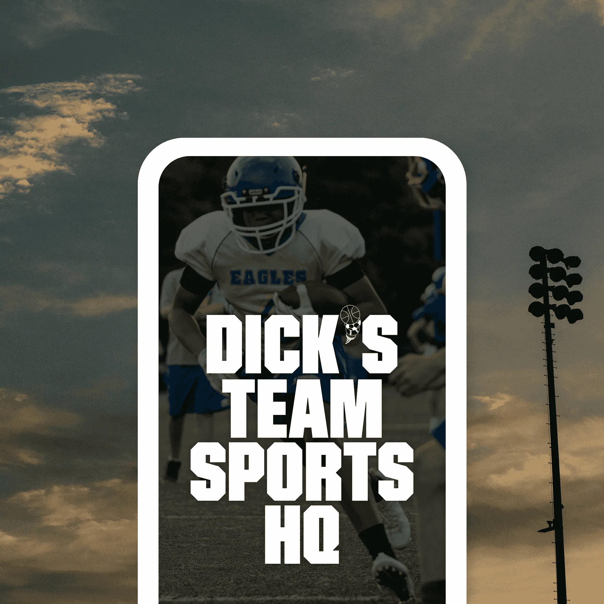
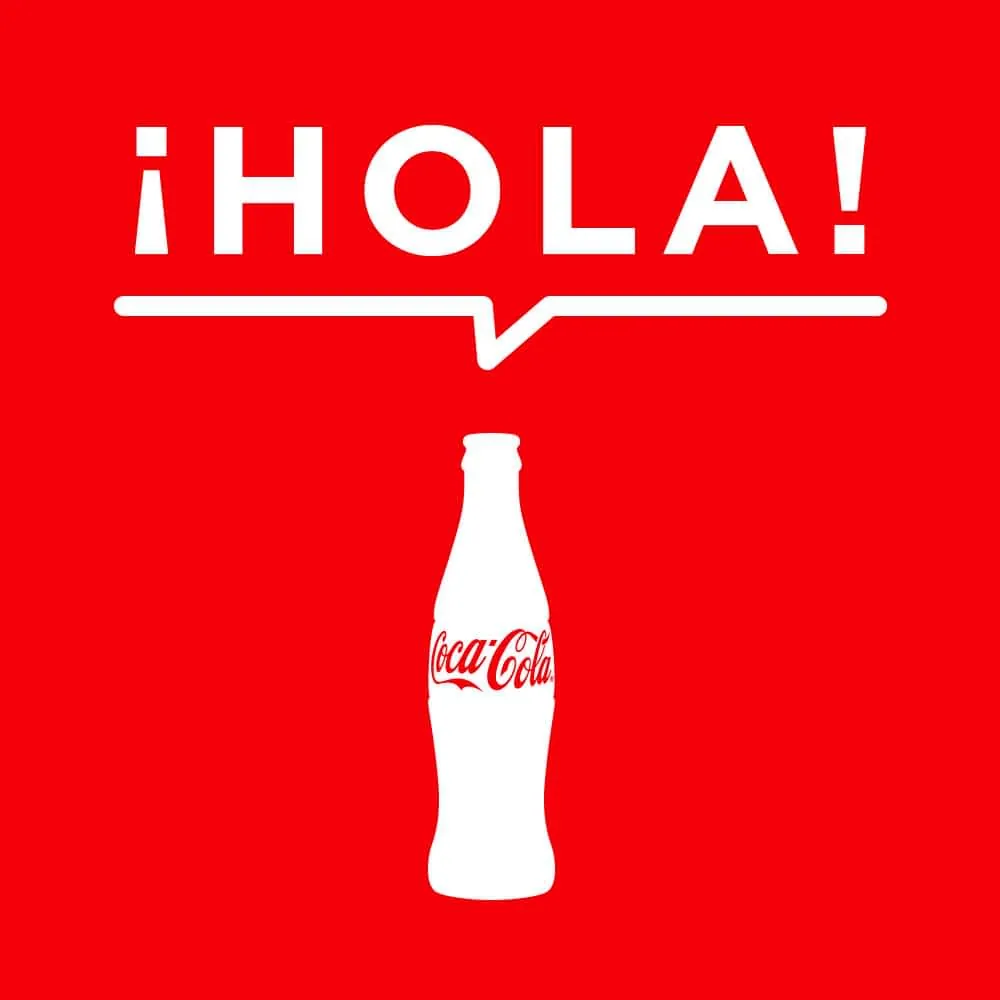
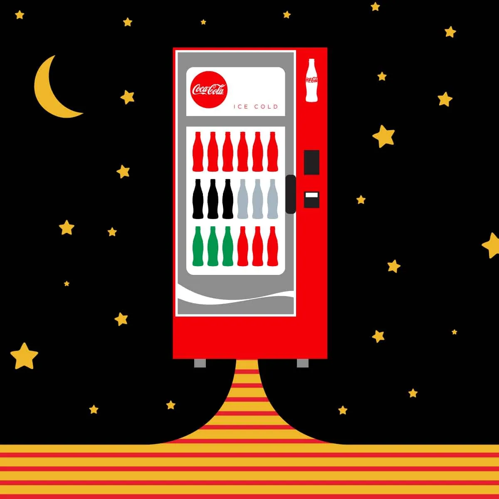
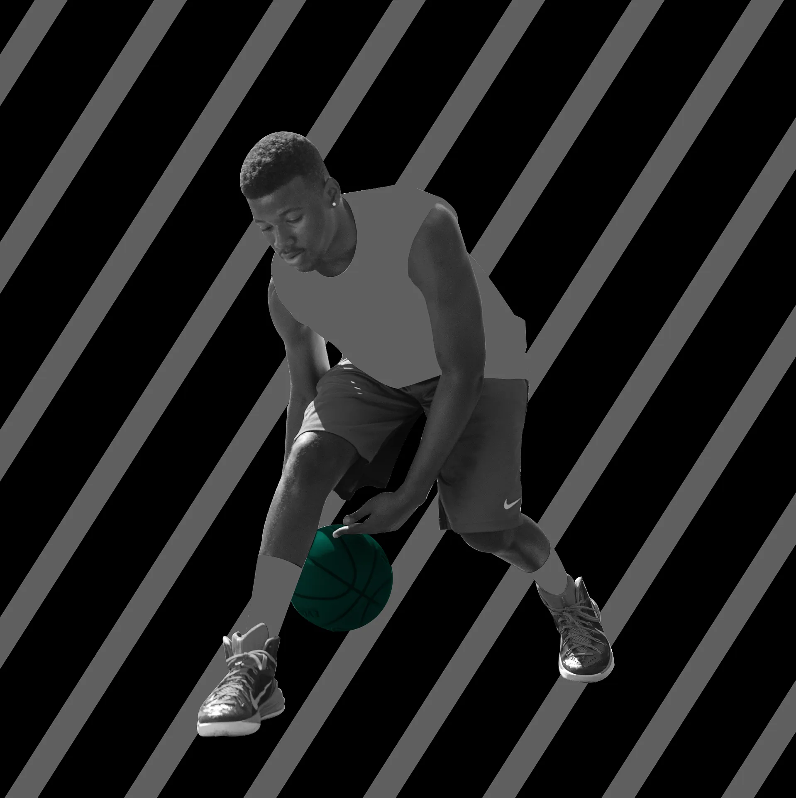

Senior Product
Designer
building design systems 🤙

Cox Automotive
Building the multi-brand design system behind Autotrader, KBB, and OEM dealer sites
Cox Automotive
Interface motion, micro-interactions, and animated data
Autotrader
Unifying a fragmented icon language

Sketches, Illustrations and Doodles
A collection of drawn things

Paradesmith
Transforming scattered online content into curated experiences

DICK's TSHQ
Designing a fan wear store to turn team spirit into club revenue
Logos
Collection of logo and brand identity work

Just for Funsies

Autotrader
Designing a scalable illustration system across web, mobile apps, and marketing

DICK's TSHQ
Designing mobile app features that ease the pain of youth sports management
Kelley Blue Book
Growing a renowned leader's visual library
DICK's TSHQ
Redesigning youth sports registration for over 3 million players and 10,000 teams

Coca-Cola
Unified campus communication

Coca-Cola
Designing for one of the world's most iconic brands

DICK's TSHQ